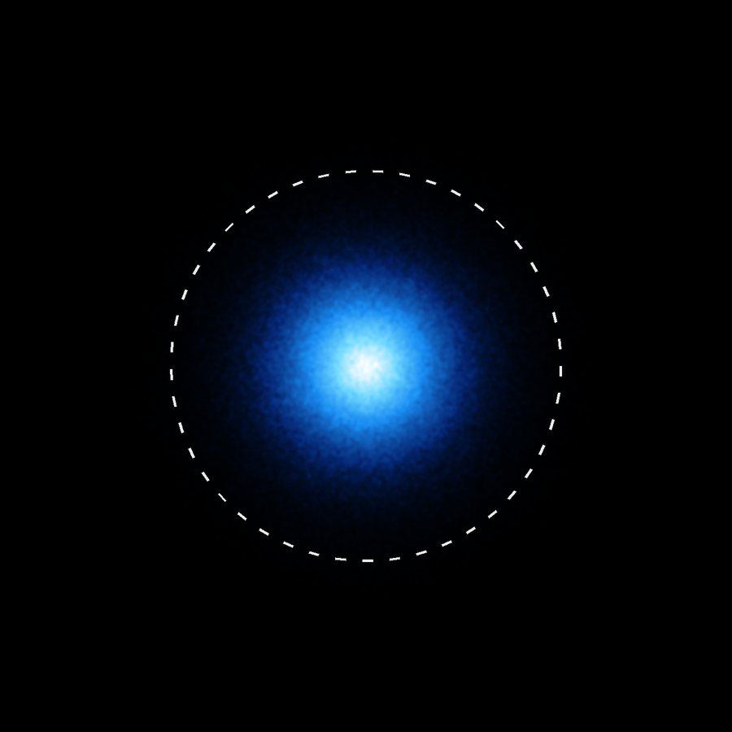
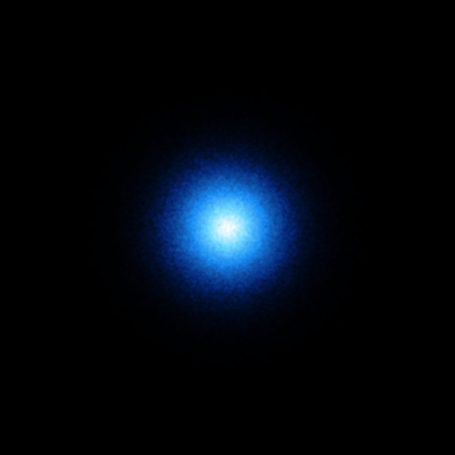
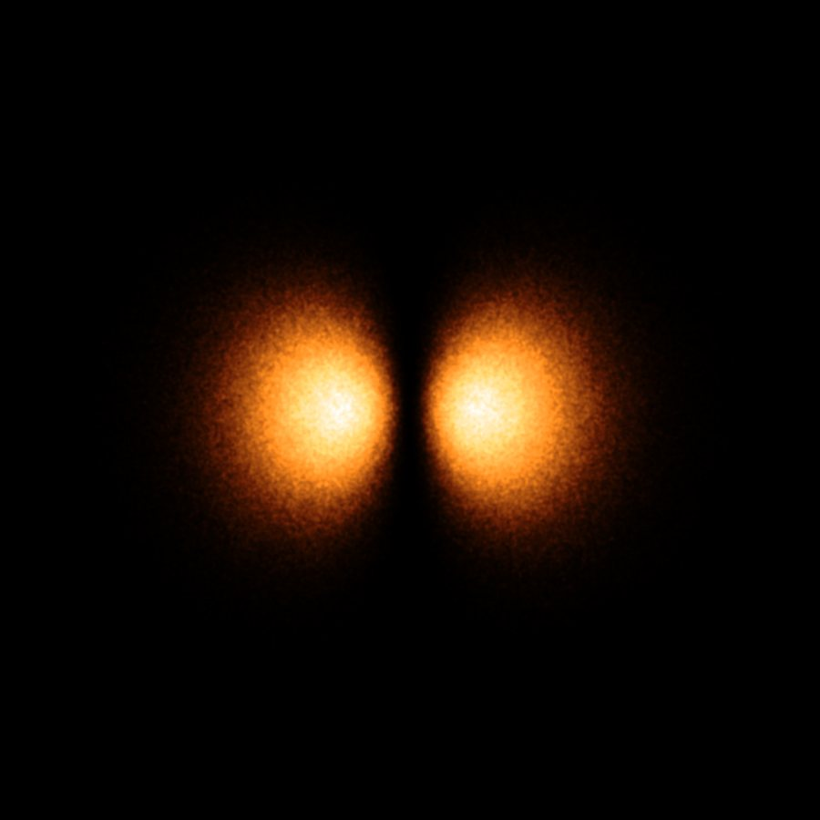
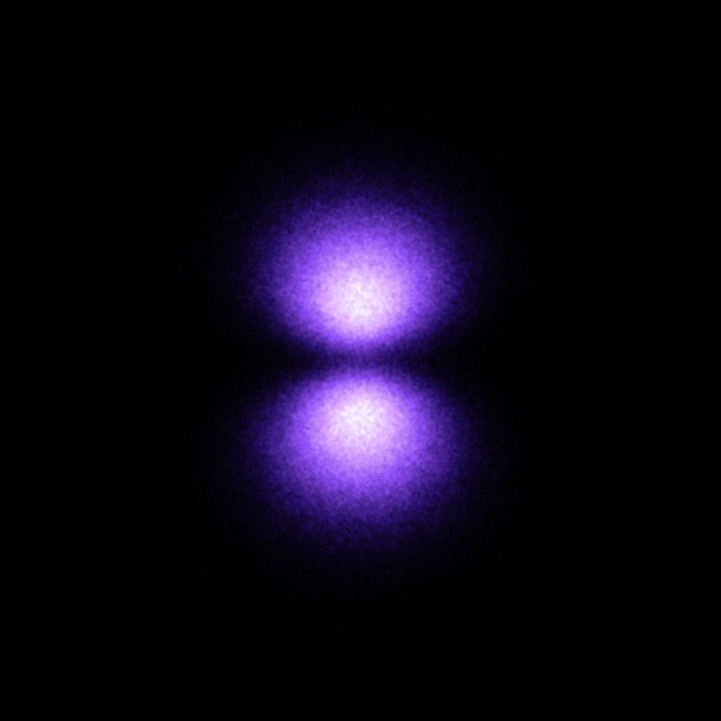
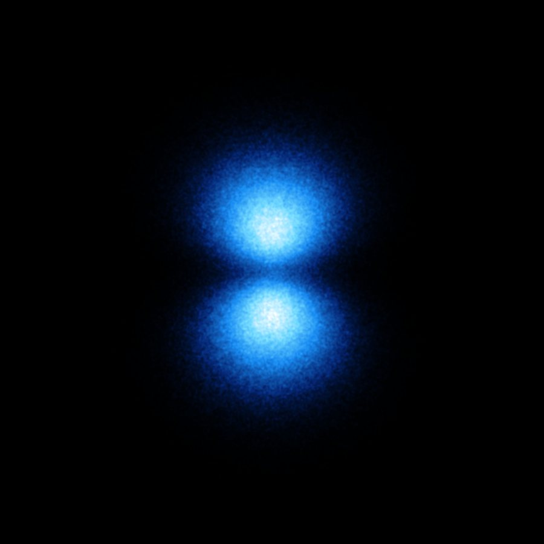
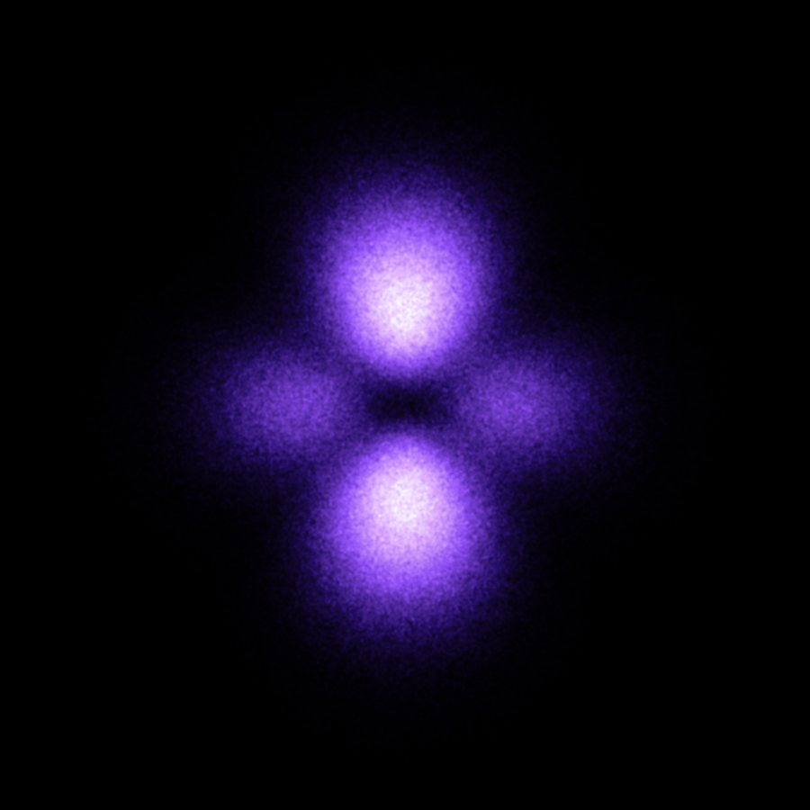
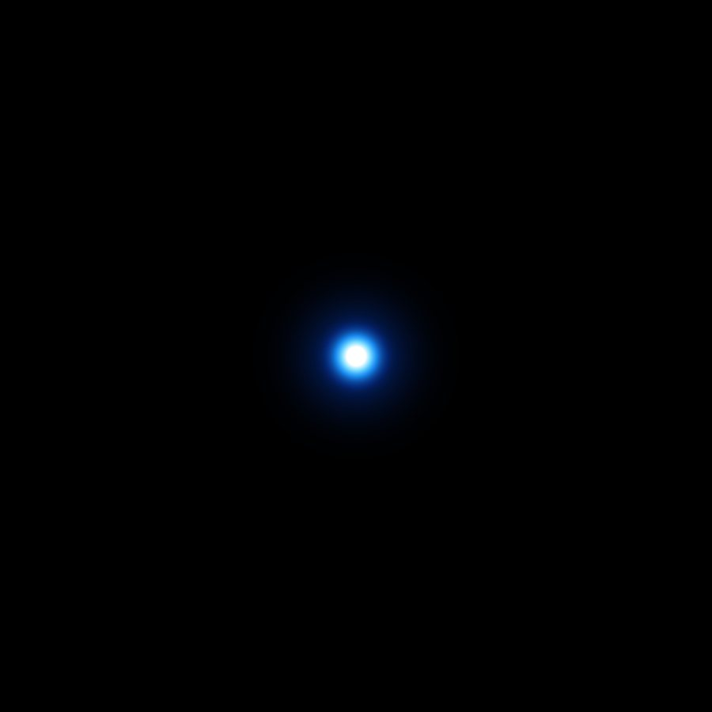

Group 2 · Grade 11 Chemistry · Unit 1.6 · Pages 35–36
Our topic: electron probability and orbitals. The orbits you were taught are not there. What is there is a cloud of probability — and it can be drawn, counted and photographed.
Members: [imran, olana]
One electron, many measurements
Question 1 · 1.6.2
In our own words: a map of chance. Measure one electron's position over and over and every result lands somewhere different. Plot them all and a cloud appears.
ψ is the wave function; ψ² gives the probability of finding the electron at a point. The cloud is ψ² drawn.
Question 1 · the maths behind the cloud
Schrödinger's equation treats the electron as a standing wave. Each solution is a wave function, ψ. On its own ψ measures nothing — but ψ² is the probability of finding the electron in a region of space.
Aneta Stodolna's team magnified electrons escaping from hydrogen atoms more than 20,000× onto a detector. Stack enough of those events and the node rings of ψ² appear — the first direct look at an atom's wave function.
The chance of finding a 1s electron at distance r: zero at the nucleus, a peak at one Bohr radius, and never quite zero again.

The 90% boundary of a 1s orbital
Question 2 · 1.6.3
An atomic orbital is a region of space around the nucleus where an electron is very likely to be found — the volume holding about 90% of its probability cloud. Each orbital holds at most two electrons.
of the probability sits inside that dashed line. The other tenth is spread beyond it — so the cloud has no hard edge.

1 2 3 4Hydrogen 1s — drawn to show probability, not a path
Question 2 · our diagram
Notice what is missing: no line anywhere for the electron to travel along.
Question 3 · 1.5.5 against 1.6
| Compare | Bohr model · 1913 | Quantum mechanical model |
|---|---|---|
| Where the electron is | A fixed circular orbit, known radius | Somewhere in a cloud of probability |
| Its motion | A definite path, like a planet | No path at all — a standing wave |
| Position and momentum | Both exact at the same time | Cannot both be exact (Heisenberg) |
| Energy levels | Assumed, to fit the spectrum | Falls out of Schrödinger's equation |
| Shape information | None — every orbit is a circle | Shapes: s sphere, p dumbbell, d cloverleaf |
| Works for | H, He⁺, Li²⁺ only | Every atom, plus line splitting |
Bohr told us where the electron goes. This model tells us where it is likely to be found.
Our presentation task
Not “where is it going?” but “where is it most likely to be found?” That answer is the orbital.
The picture on every science logo — and not what an atom is
1.6.2 · quantum numbers · groups 3, 4 and 5 go deeper
Which shell. 1, 2, 3 …
0 up to n−1.
0=s 1=p 2=d 3=f
−ℓ … +ℓ, so 2ℓ+1 per subshell
+½ or −½. Two per orbital
Shell n holds n² orbitals. For n = 3: one 3s, three 3p, five 3d — nine orbitals, eighteen electrons.
No two electrons in an atom share all four numbers. That is why an orbital stops at two.
Orbitals growing with n, then 1s opening into 2s
ℓ = 0 · one orbital
Every s orbital is a sphere, whatever its n. The electron is equally likely in every direction, so only its distance matters. 1s < 2s < 3s in size.
The dark ring inside 2s is a node: a surface where ψ² is exactly zero. 2s has one, 3s has two.
The strange part: the electron is found on both sides of it and never on it — it was never travelling.
The sphere pinching into a dumbbell, then the real 2p clouds

px

py

pz
ℓ = 1 · three orbitals
Two lobes with the nucleus between them, pointing along three perpendicular axes. The flat plane through the middle is a node, so the electron is never found at the nucleus. A p subshell holds six electrons.
Bonds form where orbitals point. Pure p orbitals sit at 90°, yet water's bonds are at 104.5° and methane's at 109.5° — the first sign that orbitals mix before they bond.
ℓ = 2 and 3 · the rest of the zoo
From n = 3. Holds 10 electrons.
From n = 4. Holds 14 electrons.
Four of the five d orbitals are cloverleaves; the fifth, dz², has a ring round its waist. Nobody designed these shapes — they fall out of the maths.
Copper(II) sulfate is blue and nickel(II) sulfate green because the metal's five d orbitals stop being equal in energy. That colour is a d orbital you can see.
Recap · the main scientific idea
X-rays fired at a crystal scatter off electrons, and the map that comes back is electron density — these clouds, measured. Every structure ever solved is a picture of ψ².
Orbitals are about probability, not paths.
The five 3d orbitals, one after another

dz²

the nucleus
Over to you
A 100% boundary would have to be infinitely large, because ψ² never quite reaches zero. 90% still shows the orbital's real size and shape.
It fails for every atom with more than one electron, it cannot explain spectral lines splitting in a magnetic field, and it needs an exact position and momentum at once — which the uncertainty principle rules out.